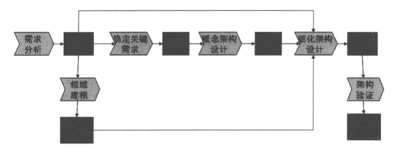

架构思想解析：
- 软件架构关注分割与交互：软件系统的架构将系统描述为计算组件及组件之间的交互
- 软件架构是一系列有层次的决策：架构涉及的决策，往往对整体质量、并行开发、适应变化等方面有重大影响
- 系统、子系统、框架都可以有架构：软件其实是由“组件递归组合而成”的
一个架构视图是对于从某一视角或某一点上看到的系统所作的简化描述，描述中涵盖了系统的某一特定方面，而省略了与此方面无关的实体
软件的逻辑架构规定了软件系统由哪些逻辑元素组成以及这些逻辑元素之间的关系。具体而言，组成软件系统的逻辑元素可以是逻辑层（layer）、功能子系统、模块。
设计逻辑架构的核心任务，是比较全面地识别模块、规划接口，并基于此进一步明确模块之间的使用关系和使用机制
物理架构规定了组成软件系统的物理元素，这些物理元素之间的关系，以及它们部署到硬件上的策略。就是进程、线程，以及作为类的运行时实例的对象等，而进程调度、线程同步、进程或线程通信等则进一步反映物理架构的动态行为
架构设计3个原则：
- 看透需求：设计人员要做到“理解了、能说出所以然来”，需求要全、矛盾关系、追溯关系
- 架构大方向正确：重重视“找对路子”
- 设计好架构的各个方面：要求从多个方面进行架构设计，运用“多视图设计方法”，逻辑视图、开发视图、物理视图、运行视图、数据视图
架构设计早期注重识别：重大需求、特色需求、高风险需求，据此来决定如何划分顶级子系统、采用什么架构风格和开发技术、集成是否要支持、二次开发是否要支持
架构设计6步骤：
- 需求分析
- 领域建模：目的是透过问题领域的重重现象，捕捉其背后最为稳固的领域概念，以及这些概念之间的关系
- 确定关键需求：不权要求对功能需求进行筛选，还要对非功能需求进行综合权衡，最终确定对软件架构起关键作用的需求子集
- 概念架构设计：同时重视关键功能和关键质量，“1个决定4个选型”，如何划分子系统；架构风格选型；开发技术选型；集成技术选型；二次开发技术选型
- 细化架构设计：分别从逻辑架构、开发架构、运行架构、物理架构、数据架构等不同架构视图进行设计
- 架构验证：开发架构原型，对原型进行测试和评审

需求开发：
1.概念化阶段
2.需求分析阶段
3.架构设计阶段
4.并行开发与测试阶段
5.验收与交付阶段
概念化阶段：
1.愿景分析：针对系统目标、主要特性、功能范围和成功要素等进行构思并达成一致
2.风险评估
3.可行性分析
4.项目进度和成本的粗略预估
愿景 = 业务目标 + 范围 + Feature + 上下文图
ADMEMS矩阵

约束需求 = 业务环境因素 + 使用环境因素 + 构建环境因素 + 技术环境因素
需求分析主线中的关键步骤，可以概括为“三横两纵”
- 三横
- 确定系统目标
- 研究高层需求
- 建立用例模型
- 两纵
- 需求沟通、需求启发、需求验证
- 确定非功能需求

用例图：
- 用例的名称应该从参与者的角度进行描述，并以动词开头，这样一来通过“读图”可以清晰地获得用例图的语义
- 用例图所做的，一是确定与本系统交互的角色或外部系统，二是描述系统必须提供的功能
- 用例图以可视化的方式进一步明确了系统功能范围（Scope）内的所有功能
用例规约的主要目的是界定软件系统的行为需求（需求可以划分为业务需求、用户需求和行为需求三个层次，所谓行为需求是指软件系统为了提供用户所需的功能而必须执行哪些行为）
推后用例细化，不是对软件架构起关键作用的用例，可以推迟到要实现该用例所定义的功能之前才进行细化，过早地为这些用例制定用例规约会增加“需求变更管理”的开销，使需求变更的影响增大
领域模型，就是将领域概念（即领域行话）以可视化的方式抽象成一个或一套模型。对比而言，领域模型比《领域词汇表》更进了一步，它不仅关注重要的领域概念，更重要的是它还刻画领域概念之间的关系
不同需求，影响架构的原理不同
需求 | 基本原理 | 对架构设计的影响 |
功能 | 功能是发现职责的依据 | 每个功能都是由一条“职责协作链”完成的，架构师通过功能规划职责协作链、将职责分配到子系统、为子系统界定接口、确定基于接口的交互机制 |
质量 | 质量是完善架构设计的动力 | （必须）基于当前的架构设计中间成功，进一步考虑具体质量要求，对架构设计中间成果进行细化、调整、甚至推倒重来，一步步使架构设计完善起来 质量和功能共同影响着架构设计，抛开功能、单依据质量要不认设计架构是不可能的 |
约束 | 约束对架构设计的影响分为几类 | 直接制约设计决策（例如“系统运行于Unix平台之上”） 转化为功能需要的约束（例如“本银行系统执行现行利率”引出“利率调整”功能） 转化为质量属性需求的约束（例如“柜员计算机平均水平不高”引出 易用性需求） |
关键需求决定架构，其余需求验证架构：关键需求横跨功能需求、质量属性及约束这三类需求
- 不同质量属性之间往往具有相互制约性，于是我们应该权衡哪一部分质量属性是架构设计的重点目标
- 功能需求数量众多，应该控制架构设计时需要详细分析的功能（或用例）的个数
确定关键质量：
- 考虑为了提高要开发的软件系统受认可的程度，应着重提高哪些方面的质量属性要求
- 充分考虑这些质量属性的相互制约或相互促进关系，以调整不同质量属性的要求标准
- 必须满足各种约束性需求
确定关键需求：
- 核心功能：业务层的接口要反映的这些功能
- 必做功能：主要依据客户方的背景，一般支持“运营”的功能比支持“管理”的功能优先级要高
- 高风险功能
- 独特功能
概念架构界定系统的高层组件，以及它们之间的关系。概念架构意在对系统进行适当分解 ，而不陷入细节。借此，可以与管理人员、市场人员、用户等非技术人员交流架构。概念架构规定了每个组件的非正式规约，以及架构图，但不涉及接口细节
概念架构贵在有针对性，“直指目标”、“设计思想”和“重大选择“是它的三大特征
鲁棒图

场景思维
- 影响来源：来自系统外部或系统内部的触发因素
- 如何影响：影响来源施加了什么影响
- 受影响对象：默认的受影响对象为”本系统“
- 问题或价值：受影响对象因此而出现什么问题，或需要体现什么价值
- 所处环境：此时，所处的环境或上下文怎样
概念架构设计的1个决定、4个选择
- 决定：如何划分顶级子系统
- 选择：
- 架构风格选型
- 开发技术选型
- 二次开发技术选型
- 集成技术选型

细化设计五视图：
- 职责划分（逻辑视图）：分模块、分层、划分垂直功能子系统，为模块/层/子系统定义接口……
- 程序单元组织（开发视图）：开发语言选型、Application Framework选择、编译依赖关系……
- 控制流组织（运行视图）：多进程技术、多线程技术、中断服务程序……
- 物理节点安排（物理视图）：PC机、服务器、单片机的选型与互联……
- 持久化设计（数据视图）：关系数据库、实时数据库、文件、Flash……


5个视图，15个设计任务
1.逻辑架构=模块划分+接口定义+领域模型
- 职责划分：逻辑层（Layer）；子系统、模块；关键类
- 职责间协作：接口；协作关系
2.开发架构=技术选型+文件划分+编译关系
- 程序单元：源文件、配置文件；程序库、框架；目标单元
- 程序单元组织：Project划分；Project目录结构；编译依赖关系
3.物理架构=硬件分布+软件部署+方案优化
- 物理节点：PC、服务器；单片机、单板机、专用机；软件安装、部署、烧写；系统软件选型
- 物理节点拓扑：连接方式、拓扑结构；物理层（Tier）；冗余考虑
4.运行架构=技术选型+控制流划分+同步关系
- 控制流：进程、线程；中断服务程序
- 控制流组织：系统启动与停机；控制流通信；加锁与同步
5.数据架构=技术选型+存储格式+数据分布
- 持久数据单元：文件；关系数据库；实时数据库
- 数据存储格式：文件格式；数据库Schema
总体架构 设计，将一个综合”系统“切分成多个”顶级子系统“，每个”顶级子系统“都应该是可交付的实体（而不是虚的抽象实体）——具体而言，总体架构设计要明确把系统切分成后端系统、前端系统、底层嵌入式系统、中间件系统这些”顶级子系统“，并且把要开发哪些API、哪些程序库（Library）、哪些后端驱动程序、哪些前端插件等也作为特殊的”顶级子系统“尽早明确出来

”软件重用“的一对内在矛盾：”重用几率“大小和”重用所带来的价值量“大小。软件单元的粒度越大，则重用所带来的价值量就越大，但重用几率越小；反之，粒度小的软件单元被重用的几率在，但重用所带来的价值量小